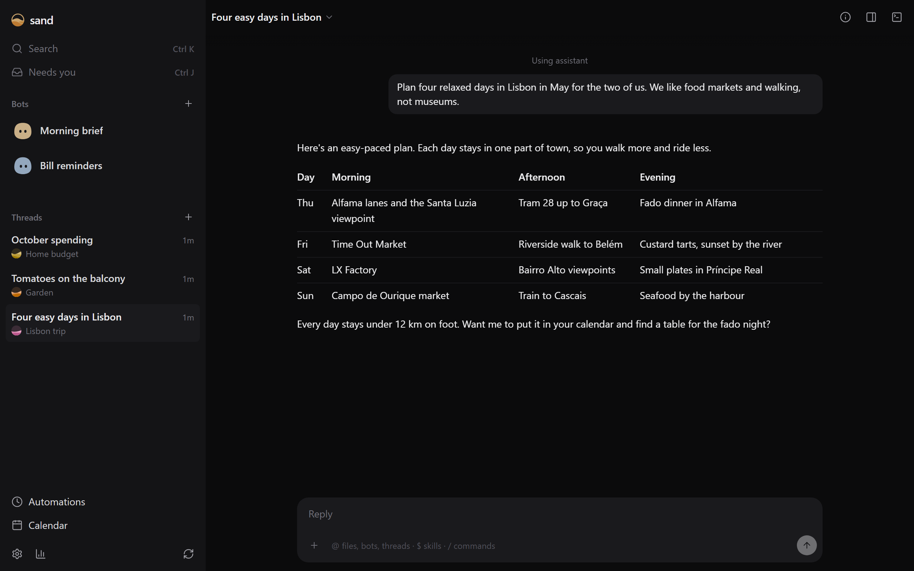
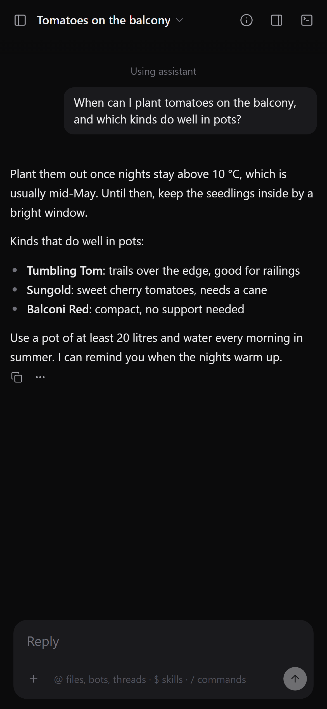
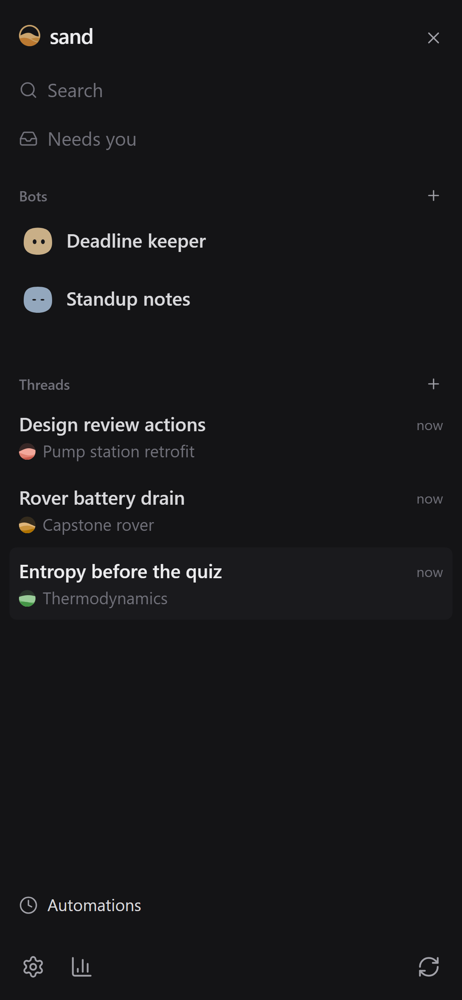

Use sand like any chat assistant: get ready for an exam, work through a lab report, debug a test rig, turn meeting notes into actions. When you want it to work differently, ask it, and it builds the change into itself. You can use it from your phone too.
Every part of sand is a plugin, so it can add to its own sidebar, side panel, chat or tools, and the change loads without closing your chat. In the clip above, each of these took one request.
For a thermodynamics reading list. Papers sand cites show up as cards with the abstract and a Copy BibTeX button.
For a capstone project. A battery datasheet opens beside the chat, and page links jump to the right line.
For a team repo. Every commit and branch, in the side panel next to the chat.



Chats for anything: coursework, lab reports, work projects. Put related ones in a project, a folder with the files they work on.
Take care of an ongoing job, like reminding you before deadlines or drafting your daily standup, on a schedule or when something changes.
Chats keep going when you close the tab. Pair your phone or another PC to pick up the same chats there.
Use a Claude plan through Claude Code, a ChatGPT plan through Codex, or API keys.
Settings → Add-ons lists the parts sand comes with. Turn them on or off there, or install more.
sand opens in your browser when it's installed. Then open Settings → Accounts and choose your model.